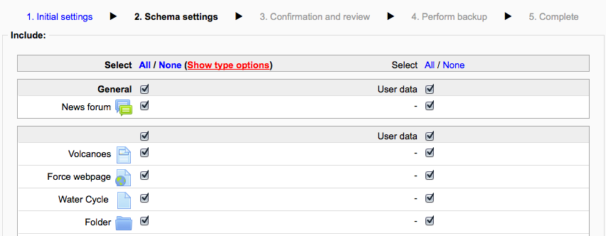
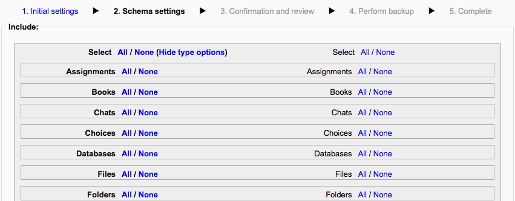

A course can be saved with some or all of its parts by using the course backup. Typically, the site administrator will set a schedule of automated course backups for the whole site. A teacher with editing privileges can create a backup or download an existing backup for safe keeping, or for use on another Moodle site.
To backup a course

- Go to Administration > Course administration > Backup
- Initial settings - Select activities, blocks, filters and other items as required then click the Next button. Users with appropriate permissions, such as administrators and managers, can choose whether to include users, anonymize user information, or include user role assignments, user files, comments, user completion details, course logs and grade history in the backup.
- Schema settings - Select/deselect specific items to include in backup, then click the Next button.
- If desired, select specific types of activity to be backed up by clicking the link ‘Show type options’.
Backup screen with option to select all or none
Backup screen with options to select activity types
- Confirmation and review - Check that everything is as required, using the Previous button if necessary, otherwise click the ‘Perform backup’ button
- Complete - Click the Continue button
A backup file (with distinctive .mbz extension to avoid confusion with .zip files) is then saved in the course backup area. Backup file names are of the form backup-moodle2-course-coursename-date-hour.mbz, ending in -nu.mbz when backed up with no users and -an.mbz with anonymized names.
Anonymize user information is a backup feature which “protects user identities” by making each user anonymous. If this box is checked in the backup initial settings, Moodle will substitute aliases for real names, substituting @doesntexist.com email addresses and so forth. For example “Max Manager” might become “anonfirstname4 anonlastname4”.
Courses created in 1.9 can be backed up and then restored into a 2.1 Moodle or later but blocks are not currently restored and nor is user data (such as forum posts, grades, submissions etc).
The assignment activity module was completely rewritten in Moodle 2.3. Thus, assignments from Moodle 2.2 and older (e.g. from Moodle 1.9) need to be upgraded in order to continue being usable. See the section ‘Restoring course backups from Moodle 2.2 and older’ in Assignment upgrade tool for details of what to do.
The backup and restore processes can offer the teacher and administrators many creative solutions.
- Duplicating courses or specific activities in one course to another course (similar to Import)
- Updating a production Moodle site course, with material from a localhost site course
- Transferring a course to a new Moodle site.
- In earlier versions of Moodle, a way of rolling a course forward without past student activity
- Creating a blank activity, save just that activity and then restore it to the course or another course one or more times.
Default settings for course backups can be set by a site administrator in Administration > Site administration > Courses > Backups > General backup defaults.
Selected settings may be locked, so that they cannot be changed when creating a course backup.
By selecting a time in the “Keep logs for..” dropdown, it is possible to specify how long backup logs information is kept before being deleted. As this information may be very large, it is recommended the length of time chosen be quite short.
- Anonymise user data on backup
- Backup courses
- Backup sections
- Backup for hub
- Backup for import
- Configure backup options
- Download files from backup areas
- Backup user data